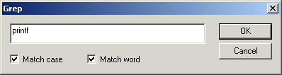
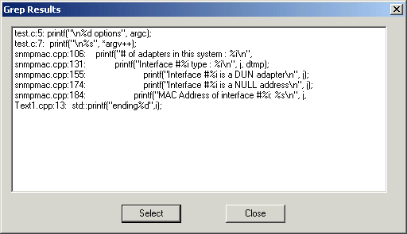
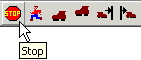
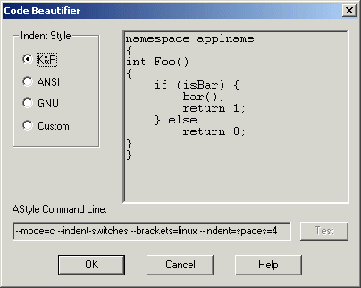
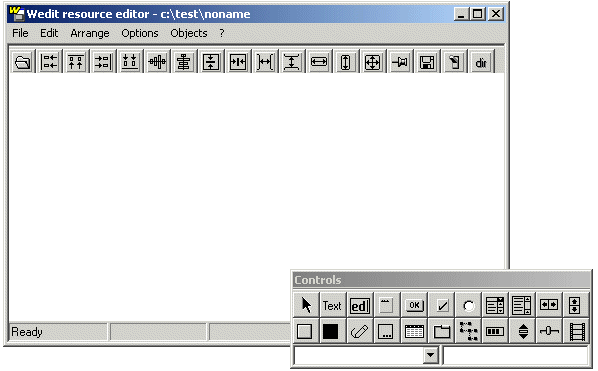
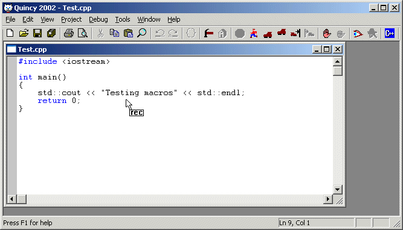

Quincy Tools
Quincy includes a suite of programmer's tools on the Tools menu. They include:
Grep
Quincy's grep tool searches all the source code files in the current source file directory, usually the directory where the current active source code file is stored but also in the directory of a Quincy
Project if one is currently loaded. Grep searches the source code files for a match on a specified string argument.
- Select Grep from Quincy's Tools menu to display the Grep dialog shown here.

- Type the search string argument into the edit box control on the Grep dialog.
- Select Match Case and/or Match Word to instruct grep to match specifically the case you entered and to select only whole words and not substrings within words.
- Click OK to begin the search.
Quincy opens the Grep Results dialog shown here.

As grep finds matches in the files, it displays them in the Grep Results dialog.
- To terminate grep before it completes the search, click the Stop tool button.

- When grep is completed, you can double click any of the source code lines reported to open that source code file in Quincy's editor with the insertion cursor positioned on the selected line.
- Click Close on the Grep Results dialog to close its window.
Artistic Style
The Artistic Style code beautifier tool reformats the code in the active editor window. When you select the tool, Quincy opens the Code Beautifier dialog shown here.

- Select one of the three defined styles from the Indent Style radio button set. Observe samples of the three styles in the sample code display on the right. Observe the AStyle command line at the bottom of the dialog.
- Or ...
- Select the Custom indent style
- modify the Artistic Style command line to beautify the code according to your preferences.
- Click the Help button to open the
Artistic Style
user's manual.
as a reference for the command line options.
- Click the Test button to see the effects of your command line in the sample code display.
- Click OK.
Note: Tab stop lengths and whether to tab with tab characters or spaces are taken from the settings programmed in the
Editor Options
dialog.
Resource Editor
Quincy integrates the LCC Wedit resource editor program.
- Choose the Resource Editor command on the Tools menu to open Wedit as shown here.

- Click the ? menu item to see how to get help in the use of this program.
Macros
Quincy supports keyboard macros. You program a macro by entering keystrokes. Each time you playback the macro it is as though you entered those keystrokes again.
Recording a Macro
- Position the keyboard cursor where you want to start recording the macro.
- Start recording by using one of these commands:
- Or ...
- From the Tools menu, choose the Macro submenu.
- From the Macro submenu choose Record
These commands change Quincy's mouse cursor to the configuration shown here and start the recording operation.

- Type the keystrokes to record the macro.
- When you are finished:
- Stop recording by using one of these commands:
- Or ...
- From the Tools menu, choose the Macro submenu.
- From the Macro submenu choose Stop
These commands return Quincy's mouse cursor to its original configuration and stop the recording operation.
Playing Back a Macro
- Position the keyboard cursor where you want to start macro playback to begin.
- playback the macro by using one of these commands:
- Or ...
- From the Tools menu, choose the Macro submenu.
- From the Macro submenu choose Playback
<--previous page
next page-->